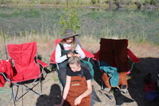
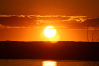
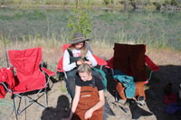
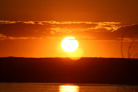

|
My name is Jack Needs I was born in Nampa Idaho, I am married and have two beautiful daughters one is now 20 and the other is now 14 years old. My daughters keep me very busy, I love the outdoors and anytime I can get up a canyon or a place I've never been I try to get there. I will be offering classes on the best places to fly fish and take very scenic outdoor imagesof mostly southwestern Idaho. some in Oregon around the Owyhe river or whereever you would like to go in this area. Most of my images you will view under the images link are of Southwestern idaho with some good images of the Yellowstone area. I love to fly fish and have been tying my own flies since I was twelve, if you would like for me to show you around our great outdoors below is muy contact information, if not enjoy the images of our great outdoors. |
  
 
You can contact me by either phone or email
My email address is: jackneeds@yahoo.com
or
phone: 208-880-1713
I have over 50,000 images for you to choose from
take care
Jack Needs